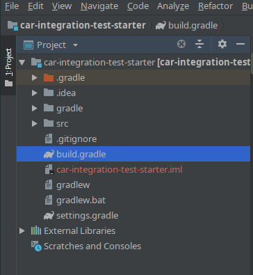
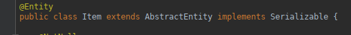
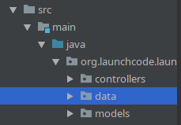
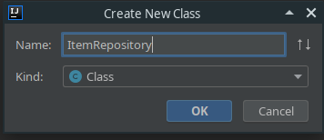
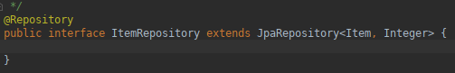

Configuration: Spring & Postgres
One of the many benefits of Spring is that it contains a vast amount of tools we can leverage while building our web applicatoins. One of these tools is Spring Data JPA. Spring Data JPA has some code that will connect to our database, and perform basic operations by using methods attached to the JPA Repository.
JPA Repositories make it very easy for us to work with various data stores including SQL data stores like Postgres, and NoSQL data stores like ElasticSearch.
To get our web application to work with JPA Repository we need to do a couple of things.
- Include Spring Data in our dependencies (this class uses the build.gradle file to manage our dependencies)
- Configure our database connection information in our application.properties file
- Map our classes to our tables using Hibernate
- Extend the JPA Repository interface
Add Spring Data to our dependencies
Open your build.gradle file.

Add the associated Postgres and JPA dependencies to build.gradle as a compile-time dependency.
Set the existing h2 dependency to be a testCompile dependency, since it will only be needed for running tests at this point.:
dependencies {
compile('org.springframework.boot:spring-boot-starter-data-jpa')
compile(group: 'org.postgresql', name: 'postgresql', version: '42.1.4')
testCompile('com.h2database:h2')
}
You will more than likely have additional dependencies listed, leave the ones you do have. We are simply adding these two new dependencies. The first is for Postgres it’s the library that contains all the tools we need to work with Postgres in our web applications. The second dependencies is H2 Database. It creates a temporary in memory datastore that behaves like Postgres. We can use this for testing purposes, and we won’t need to setup a new database for testing purposes. In some instances you may want to use an actual database for testing purposes.
Map Classes to Tables
Now we will need to use the @Entity annotation to map our POJO Models to our PSQL Tables.
Open the POJO you want mapped to the database, and add the @Entity annotation above the class declaration.

You will need to continue to add @Entity annotations to each POJO that you want mapped to a PSQL table.
Extend JpaRepository
Finally to gain access to the records in a table, you will need to create a new JpaRepository that contains all the methods neccessary to create, read, update, and delete records.
Although you can put these new JpaRepository anywhere in your project it’s a good idea to group them together in their own package.
Add a new package named data.

Inside of that new package add a new interface named after the Model/Table you will be accessing. In this example the file will be called ItemRepository.

In that new file add an @Repository annotation, and have this interface extend JpaRepository, noting which type of Object, and the index each record will be bound to.

Your new file extends JpaRepository which provides you with built-in methods for getting all records, getting one record, and saving records. However, you can write your own methods and bind them to specific SQL statements.